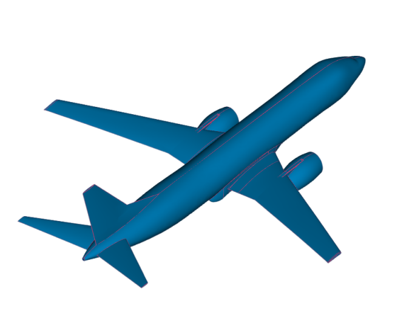
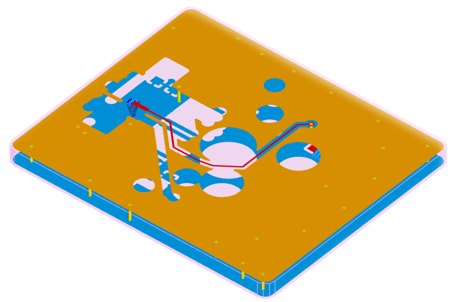
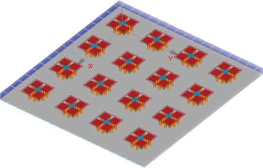

WavEDA电磁场仿真工具以革新性的混合有限元算法为核心， 融合区域分解、 自适应网格迭代与模型降阶技术， 突破了传统电磁与电路仿真在芯片-封装-系统级、射频集成微系统、RFIC及MMIC领域的局限， 有效应对了大规模、多尺度、高密度崩溃及高频电磁效应等复杂挑战。
该工具实现了对目标系统的精准 3D建模与分析， 展现了其无与伦比的先进性。 它支持多样化的复杂边界条件（包括 PML、 阻抗、 周期及开放边界等）， 多种激励类型（如点源、 平面波、 集总端口及波端口）， 并能高效仿真高损耗电色散、 磁色散及 各向异性等复杂材料， 显著提升了仿真效率与精度。同时拥有强大的后处理能力， 方便用户查看S参数， 远场结果， 快照等。
在S参数提取、信号/电源完整性及电磁兼容分析中， WavEDA工具的快速扫频方法展现出了卓越的能力。 尤其在射频微波的仿真领域， 为用户提供了前所未有的仿真精度与效率。


